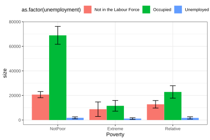
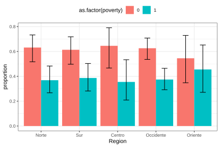
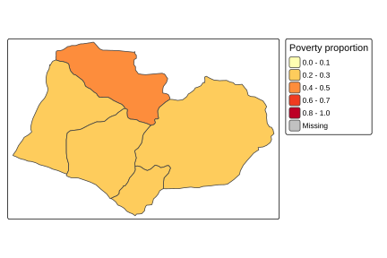
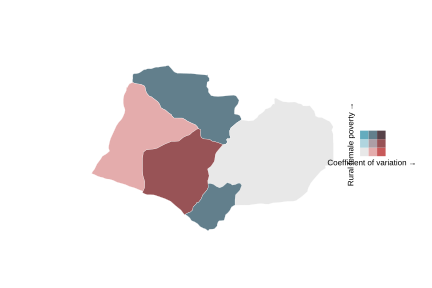

4.7 Visualization of categorical variables
The visualization of categorical variables is fundamental in household survey analysis because it makes it possible to clearly communicate the distribution of population groups and the comparisons between them. As in the analysis of continuous variables, graphs must incorporate sampling weights so that the visual representation corresponds to valid population-level estimates. When statistical precision is relevant, it is advisable to accompany bars with confidence intervals, which communicate both the central value and the uncertainty associated with the estimation process.
This section uses the ggplot2 package (Wickham, Chang, et al., 2026).
4.7.1 Bar charts
Constructing bar charts in R requires, as a prior step, obtaining the estimates to be represented visually. In the context of complex surveys, these estimates can be calculated using the survey_total() or survey_prop() functions from the srvyr package, depending on whether the interest is in population totals or proportions.
This procedure is illustrated below using the estimated population size by zone of residence. The corresponding graphical results are presented in Figure 4.1:
zone_size <- survey_design %>%
group_by(Zone) %>%
summarise(size = survey_total(vartype = c("se", "ci")))
zone_colors <- c(Urban = "#48C9B0", Rural = "#117864")
ggplot(
data = zone_size,
aes(
x = Zone, y = size,
ymax = size_upp, ymin = size_low,
fill = Zone
)
) +
geom_bar(stat = "identity", position = "dodge") +
geom_errorbar(position = position_dodge(width = 0.9), width = 0.3) +
scale_fill_manual(values = zone_colors) +
theme_bw() +
theme(legend.position = "top")
Figure 4.1: Bar chart of population size by geographic zone
The previous procedure can also be applied to variables with more than two categories. In these cases, the bar chart makes it easy to compare the estimates associated with each category of the variable of interest. For example, the estimated distribution of the population by poverty status is presented below, with the graphical results shown in Figure 4.2.
poverty_size <- survey_design %>%
group_by(Poverty) %>%
summarise(size = survey_total(vartype = c("se", "ci")))
ggplot(
data = poverty_size,
aes(
x = Poverty, y = size,
ymax = size_upp, ymin = size_low,
fill = Poverty
)
) +
geom_bar(stat = "identity", position = "dodge") +
geom_errorbar(position = position_dodge(width = 0.9), width = 0.3) +
theme_bw() +
theme(legend.position = "top")
Figure 4.2: Bar chart of population size by poverty status
One advantage of bar charts is that they can easily be extended to comparisons between two categorical variables. For example, population size by poverty level crossed with employment status can be analyzed, as presented in Figure 4.3:
employment_poverty_size <- survey_design %>%
group_by(unemployed, Poverty) %>%
summarise(size = survey_total(vartype = c("se", "ci"))) %>%
as.data.frame() %>%
mutate(
unemployed = case_when(
unemployed == 0 ~ "Occupied",
unemployed == 1 ~ "Unemployed",
is.na(unemployed) ~ "Not in the Labour Force"
)
)
ggplot(
data = employment_poverty_size,
aes(
x = Poverty, y = size,
ymax = size_upp, ymin = size_low,
fill = as.factor(unemployed)
)
) +
geom_bar(stat = "identity", position = "dodge") +
geom_errorbar(position = position_dodge(width = 0.9), width = 0.3) +
theme_bw() +
theme(legend.position = "top")
Figure 4.3: Bar chart of population size by employment status and poverty
This type of graphical analysis is especially useful for identifying intersections of vulnerability by showing two or more population characteristics simultaneously. It is also possible to present proportions instead of counts. For example, the proportion of men living in poverty by zone is presented in Figure 4.4:
male_zone_poverty_proportion <- male_subset %>%
group_by(Zone, Poverty) %>%
summarise(proportion = survey_prop(vartype = c("se", "ci")))
ggplot(
data = male_zone_poverty_proportion,
aes(
x = Poverty, y = proportion,
ymax = proportion_upp, ymin = proportion_low,
fill = Zone
)
) +
geom_bar(stat = "identity", position = "dodge") +
geom_errorbar(position = position_dodge(width = 0.9), width = 0.3) +
scale_fill_manual(values = zone_colors) +
theme_bw() +
theme(legend.position = "top")
Figure 4.4: Proportion of men living in poverty by geographic zone
Similarly, the proportion of men living in poverty disaggregated by region can be graphed, as presented in Figure 4.5:
male_region_poverty_proportion <- male_subset %>%
group_by(Region, poor) %>%
summarise(proportion = survey_prop(vartype = c("se", "ci"))) %>%
data.frame()
ggplot(
data = male_region_poverty_proportion,
aes(
x = Region, y = proportion,
ymax = proportion_upp, ymin = proportion_low,
fill = as.factor(poor)
)
) +
geom_bar(stat = "identity", position = "dodge") +
geom_errorbar(position = position_dodge(width = 0.9), width = 0.3) +
theme_bw() +
theme(legend.position = "top")
Figure 4.5: Proportion of men living in poverty by region
In summary, bar charts together with their corresponding standard errors provide a clear description of poverty, employment, or other categorical-variable patterns in the population and, when applied correctly, are a powerful tool for communicating findings from household surveys while maintaining statistical rigor in the representation of results.
4.7.2 Maps
Thematic maps are an especially useful visualization tool in household survey analysis because they make it possible to represent the territorial distribution of social and demographic indicators. In this context, the proportion estimates calculated in previous sections, such as the percentage of poverty or unemployment by region, can be projected directly onto geographic units, thereby facilitating the identification of spatial patterns and regional inequalities.
To build this type of map in R, geospatial information in shapefile format is required, containing the polygons associated with each geographic unit of analysis. This chapter uses the file bigcity_shape/BigCity.shp, whose regions correspond to those defined in the BigCity database. The sf (Pebesma et al., 2026) and tmap (Tennekes, 2026) packages make it possible to load, manipulate, and visualize this geographic information in an integrated way with the results obtained from the survey.
The following code loads the packages needed to work with geospatial information and cartographic visualization in R. First, the sf library makes it possible to read and manipulate modern spatial objects, while tmap provides tools for creating thematic maps. The instruction tmap_mode("plot") sets the maps to static visualization mode, which is appropriate for documents and reports. Finally, the read_sf() function imports the geographic file BigCity.shp, storing it in the shapeBigCity object, which contains the polygons corresponding to the analysis regions.
library(sf)
library(tmap)
tmap_mode("plot")
bigcity_shape <- read_sf("Data/shapeBigCity/BigCity.shp")With the shapefile loaded, a map of the regions can be generated using tm_shape() and tm_polygons(), as shown in Figure 4.6:

Figure 4.6: Map of BigCity geographic regions
For example, if the aim is to geographically represent the proportion of men living in poverty by region, estimated previously in Figure 4.5, the estimates obtained must be integrated with the spatial information from the shapefile. To do this, the male_region_poverty_proportion object, which contains the estimated proportions for each region, is linked to the geographic file using the left_join() function. Then, only the observations corresponding to the poverty category (poor == 1) are filtered, so that the map exclusively represents the spatial distribution of the male population living in poverty.
shape_region_map <- tm_shape(
bigcity_shape %>%
left_join(
male_region_poverty_proportion %>%
filter(poor == 1),
by = "Region"
)
)Once the spatial object with the estimates of interest has been built, the breaks argument helps define the cut points that determine the intervals of the color scale used in the map. The thematic map is then generated, making it possible to visualize the regional distribution of the proportion of men living in poverty, as presented in Figure 4.7.
poverty_breaks <- c(0, 0.2, 0.4, 0.6, 0.8, 1)
shape_region_map +
tm_polygons(
col = "proportion",
breaks = poverty_breaks,
title = "Poverty proportion",
palette = "YlOrRd"
)
Figure 4.7: Proportion of men living in poverty by region
Another use of maps in surveys is the visualization of estimate precision. For example, using the coefficient of variation of mean income by region makes it possible to identify areas where the estimates are less reliable, as shown in Figure 4.8.
The following code calculates and geographically represents the coefficient of variation of mean income by region. First, the function estimates average income for each region. The vartype = "cv" argument requests calculation of the coefficient of variation for each estimate. The classification intervals of the color scale are then defined using the cv_breaks object, and the estimates are integrated with the geographic information from the shapefile using left_join(). Finally, using the tm_shape() and tm_polygons() functions from the tmap package, the map is constructed to spatially represent the coefficients of variation using a black-and-white color scale and adjusting the map aspect ratio with tm_layout(asp = 0).
region_mean <- survey_design %>%
group_by(Region) %>%
summarise(mean = survey_mean(Income,
na.rm = TRUE,
vartype = c("cv")))
cv_breaks <- c(0, 0.1, 0.2, 1)
shape_cv_map <- tm_shape(
bigcity_shape %>%
left_join(region_mean, by = "Region")
)
shape_cv_map +
tm_polygons(
"mean_cv",
breaks = cv_breaks,
title = "Mean income CV",
palette = c("#FFFFFF", "#000000")
) +
tm_layout(asp = 0)
Figure 4.8: Coefficient of variation of mean income by region
Polygons with darker shades correspond to regions where the income estimate has greater relative variability, which may indicate insufficient sample sizes to obtain precise estimates in those areas.
When two variables are to be represented simultaneously, for example, the poverty proportion and its coefficient of variation, it is possible to build a bivariate map using ggplot2 together with the biscale (Prener et al., 2025) and cowplot (Wilke, 2025) packages. This type of visualization makes it possible to jointly identify regions with high poverty and high estimation uncertainty, as presented in Figure 4.9. The following code estimates the proportion of women living in poverty in rural zones for each region, also incorporating calculation of the coefficient of variation of the estimates, thereby generating a database ready for constructing a bivariate map.
region_sex_poverty_proportion <- survey_design %>%
group_by(Region, Zone, Sex, poor) %>%
summarise(proportion = survey_mean(vartype = "cv")) %>%
filter(poor == 1, Zone == "Rural", Sex == "Female")The following code constructs a bivariate map that makes it possible to simultaneously visualize the rural female poverty proportion and the coefficient of variation associated with that estimate by region. First, the estimates contained in region_sex_poverty_proportion are integrated with the geographic information from the shapefile using left_join(). Then, using the bi_class() function from the biscale package, the variables proportion and proportion_cv are jointly classified into a \(3 \times 3\) grid of categories (dim = 3), using Fisher’s classification method (style = "fisher"). Next, with ggplot2 and geom_sf(), the thematic map is generated using bivariate colors defined by bi_scale_fill(), while bi_theme() applies a minimalist style and the default legend is removed.
Next, the bi_legend() function creates a specialized legend that makes it possible to interpret both dimensions of the map simultaneously: the coefficient of variation and rural female poverty. Finally, using the ggdraw() and draw_plot() functions from the cowplot package, the map and legend are combined into a single visualization.
library(biscale)
library(cowplot)
bivariate_shape <- bigcity_shape %>%
left_join(region_sex_poverty_proportion, by = "Region")
k <- 3
bivariate_data <- bi_class(
bivariate_shape,
y = proportion,
x = proportion_cv,
dim = k,
style = "fisher"
)
bivariate_map <- ggplot() +
geom_sf(
data = bivariate_data,
aes(fill = bi_class, geometry = geometry),
colour = "white",
size = 0.1
) +
bi_scale_fill(pal = "GrPink", dim = k) +
bi_theme() +
theme(legend.position = "none")
bivariate_legend <- bi_legend(
pal = "GrPink",
dim = k,
xlab = "Coefficient of variation",
ylab = "Rural female poverty",
size = 8
)
ggdraw() +
draw_plot(bivariate_map, 0, 0, 1, scale = 0.7) +
draw_plot(bivariate_legend, 0.75, 0.4, 0.2, 0.2)
Figure 4.9: Bivariate map: rural female poverty proportion and its coefficient of variation by region
In this map, each cell of the legend combines a shade of the poverty proportion (vertical axis) with a shade of the coefficient of variation (horizontal axis), making it possible to simultaneously identify regions with high poverty and high estimation uncertainty. This type of representation is especially valuable for guiding decisions about the need to increase sample size in specific geographic areas.